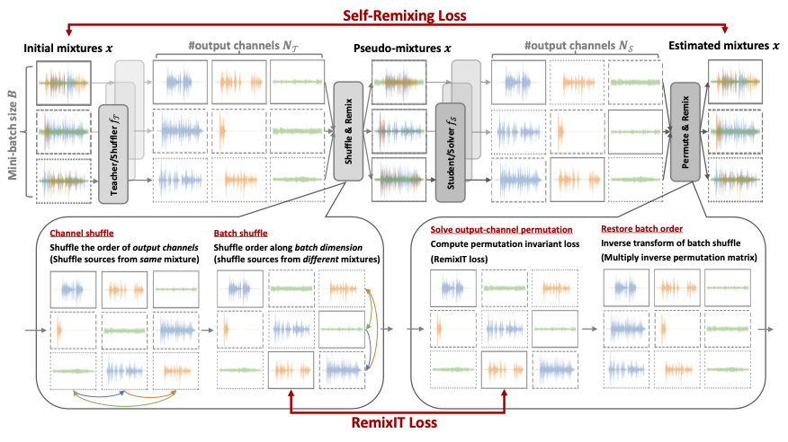

Self-Remixing
Kohei Saijo
and
Tetsuji Ogawa

Abstract:
WIP
Audio examples:
Analysis of RemixIT and Self-Remixing when training from scratch
Audio example from WSJ-mix dataset (noisy reverberant partially-overlapped 2-speaker mixtures)
Audio example from FUSS dataset (universal sound separation dataset, 1-4 sources in each mixture)